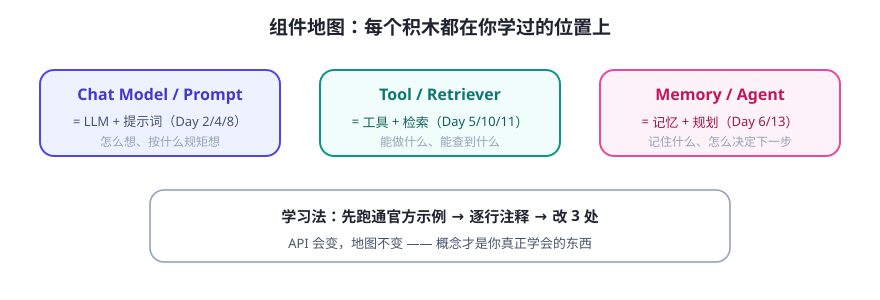

LangChain 这类框架的组件，几乎都能对应到我们前两周学过的概念。你已经有地图了，剩下的只是认识框架里每个零件的“牌子”。

组件地图（概念对应）
| 框架组件 | 对应你已学的概念 | 典型用途 |
|---|---|---|
| Chat Model | LLM（Day 2） | 统一调用各家模型 |
| Prompt Template | 提示词五要素（Day 4/8） | 把变量填进固定模板 |
| Tool | 工具函数 + 说明书（Day 5/10） | 包装你的 Python 函数给模型用 |
| Memory | 记忆（Day 6） | 自动管理对话历史 |
| Retriever | RAG 检索（Day 11） | 从向量库取相关片段 |
| Agent / Chain | 规划与编排（Day 13/18） | 决定执行顺序与循环 |
一个典型示例长什么样（结构示意，非可运行）
# 伪代码：理解“接线”逻辑即可，别背 API
model = ChatModel(provider="...", model="...") # 1. 连模型
prompt = PromptTemplate("你是{role}，请…{task}") # 2. 提示词模板
tool = Tool.from_function(get_weather, description=…) # 3. 注册工具
memory = ConversationMemory() # 4. 记忆
agent = Agent(model=model, tools=[tool], memory=memory) # 5. 组装
answer = agent.run("北京天气怎么样？") # 6. 运行
看到没有？每一行都是你前两周手工做过的事，框架只是给了现成零件。
动手建议：从“抄官方示例”开始
- 找官方文档里 “Build a simple agent” 之类的入门示例，完整跑通（通常需要 API Key 与安装依赖，先确认你的环境）。
- 逐行注释：这一行对应组件地图里的哪一格？
- 改 3 个地方：换你的系统提示词、换你的工具函数、换你的问题——跑通即算学会。
💡 环境准备提示：框架通常用
pip install langchain langchain-openai 这类命令安装，并需要模型 API Key。安装依赖和申请 Key 属于你本机环境的操作，按需进行；示例代码一律以官方文档为准。✍️ 今日练习（约 20–40 分钟）
- 打开官方文档的入门示例，把每个组件抄进一张“组件地图”笔记（含你的中文注释）。
- 不做任何修改先跑通一次；再只改系统提示词，观察行为变化。
- 记录你遇到的两个报错与解法——这是最真实的学习材料。
📌 今日小结
组件地图Model / Prompt / Tool / Memory / Retriever / Agent —— 全是旧概念的新名字
学习法先跑通官方示例 → 逐行注释 → 改 3 处 → 变成自己的
心态API 会变，地图不会；理解概念比背代码重要
明天预告：把组件真正“组装”成一个完整 Agent：从需求、配置到跑通一次真实对话。